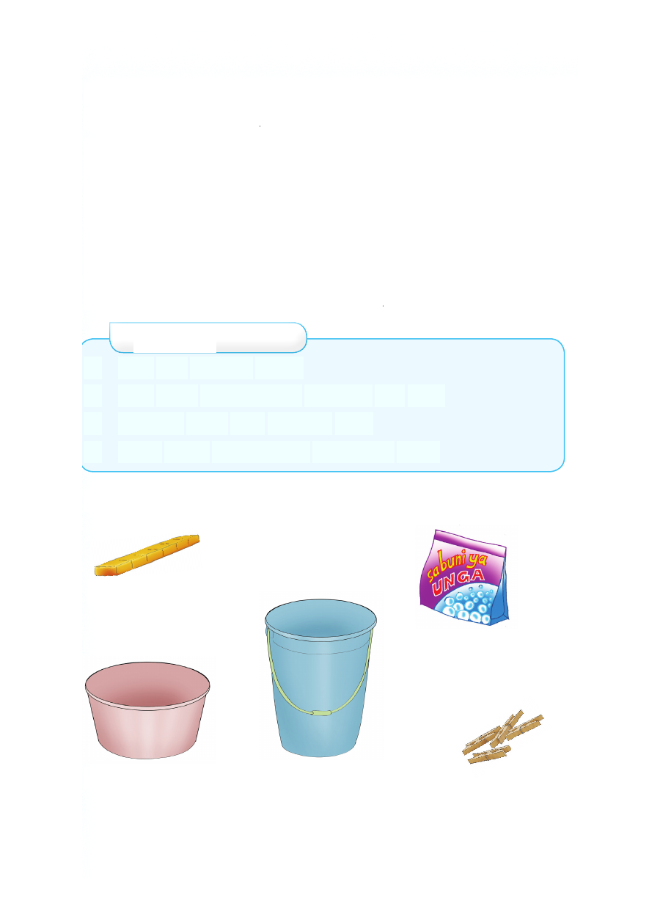

Kufua nguo
Soma habari hii, kisha jibu maswali yanayofuata.
Wanafunzi wa Darasa la Pili walifundishwa kufua nguo.
Walielezwa kuwa nguo hufuliwa ili kuondoa uchafu. Uchafu
huo husababisha magonjwa ya ngozi. Magonjwa hayo ni
kama vile upele, fangasi na miwasho. Nguo safi hudumu na
kupendeza. Nguo chafu huhifadhi chawa. Soksi na nguo za
ndani zifuliwe kila siku. Tunapofua tutenganishe nguo nyeupe
na za rangi. Nguo zifuliwe kwa maji safi na sabuni. Zisuuzwe
vizuri kwenye maji safi, kisha zianikwe juani.
Maswali
1. Kwa nini tunafua nguo?
2. Taja nguo zinazotakiwa kufuliwa kila siku.
3. Tunafua nguo kwa kutumia nini?
4. Nguo chafu husababisha magonjwa gani?
Vifaa vya kufulia nguo
sabuni ya mche
sabuni ya unga
beseni la maji ndoo ya maji vibanio